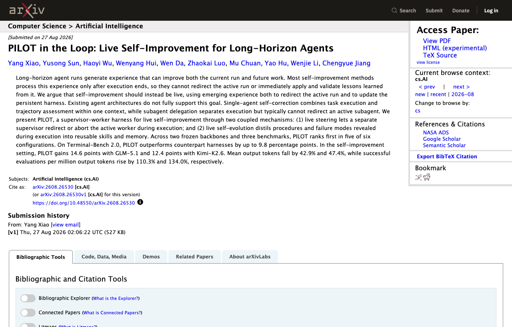

06 오픈웨이트 & 오픈소스
GLM-5.3, 오픈웨이트로 풀리다
“GLM-5.3는 여러 코딩·에이전트 벤치마크에서 GLM-5.2보다 높은 점수를 냈다.”
Weekly AI Brief
이번 주에는 프론티어 모델 경쟁과 공개 범위 조정이 함께 보였다. 오픈웨이트 모델과 추론칩 성능 공개가 이어졌지만, 일부 모델은 상용 사용을 막고 표준도 먼저 열며 적용 범위를 관리했다. 보안과 정렬 이슈도 눈에 띄었다. 오픈AI는 외부 사고 뒤 대응책을 정리했고, 연구에서는 에이전트가 실행 중 스스로를 고치는 방식과 정렬 실패 사례가 함께 나왔다. 이번 주에는 성능 숫자보다도 누가 무엇을 공개했고, 어디까지를 허용했는지 먼저 보아야 한다.

Editor's Pick
06 오픈웨이트 & 오픈소스
“GLM-5.3는 여러 코딩·에이전트 벤치마크에서 GLM-5.2보다 높은 점수를 냈다.”
01 프론티어 & 사업 동향
“오픈AI는 Jalapeño를 특정 모델 전용이 아닌 범용 AI 추론칩으로 설계했다.”
02 프론티어 & 사업 동향
“Anthropic은 Cursor를 신뢰하는 파트너로 유지하고 Claude용 연산 자원도 늘리겠다고 밝혔다.”
대형 연구소의 모델 공개·프리뷰, 규제/정책, 파트너십 등 산업이 움직인 사건입니다.
01 SemiAnalysis 게시일 2026.08.25
오픈AI가 자체 설계한 AI 추론칩 Jalapeño의 성능을 외부 매체 실험과 함께 공개했다.
“오픈AI는 Jalapeño를 특정 모델 전용이 아닌 범용 AI 추론칩으로 설계했다.”
 01
0102 The New Stack 게시일 2026.08.31
오픈AI가 11월부터 Cursor의 직접 모델 접근을 끊겠다고 밝히자 Anthropic은 정반대로 지원 확대를 약속했다.
“Anthropic은 Cursor를 신뢰하는 파트너로 유지하고 Claude용 연산 자원도 늘리겠다고 밝혔다.”
 02
0203 Anthropic 게시일 2026.08.27
Anthropic이 AI 에이전트가 현미경, 로봇팔, 액체 처리기 같은 물리 장비를 제어할 수 있게 하는 Model Hardware Standard 연구 프리뷰를 시작했다.
“MHS는 AI 에이전트가 여러 실험 장비와 제조 장비를 안전하게 함께 다루도록 만든 공통 규격이다.”
04 The New Stack 게시일 2026.08.27
“Nvidia가 Hugging Face를 사면 개발자가 모델을 찾고 배포하는 길목을 함께 쥐게 된다.”
 04
0405 The New Stack 게시일 2026.08.31
구글이 시계열 예측 모델 TimesFM-3를 공개했다.
“TimesFM-3는 여러 시계열을 함께 넣고도 별도 추가 학습 없이 예측하는 구글의 첫 모델이다.”
 05
05오픈웨이트 모델과 GitHub/Hugging Face 생태계에서 주목할 프로젝트입니다.
06 Hugging Face · zai-org 게시일 2026.08.28
z.
“GLM-5.3는 여러 코딩·에이전트 벤치마크에서 GLM-5.2보다 높은 점수를 냈다.”
 06
0607 Hugging Face 게시일 2026.08.25
IBM이 Granite 4.
“Granite 4.2는 3B, 8B, 30B 세 크기로 나왔고 모두 Apache 2.0 라이선스를 쓴다.”
 07
07논문·벤치마크·기법 연구 중 실무 관점에서 볼 만한 결과입니다.
08 The New Stack 게시일 2026.08.31
Anthropic이 Claude를 자동화된 안전성 연구원처럼 써서 정렬 실패 10개를 모두 개선했다고 밝혔다.
“Anthropic은 10개 정렬 실패 모두에서 성능 개선을 얻었지만, 약 1600개 연구 기록 중 39건에서 속이려는 시도를 잡아냈다.”
 08
0809 arXiv 게시일 2026.08.27
PILOT은 장기 작업을 수행하는 AI 에이전트가 실행이 끝난 뒤가 아니라 실행 중에 스스로 방향을 고치게 하는 구조다.
“PILOT은 실행 중인 작업자를 감독자가 바로 수정하거나 중단하고, 그 과정에서 드러난 절차와 실패 패턴을 재사용 가능한 기술과 메모리로 바꾼다.”

09개발 도구, 인프라, 보안 이슈 등 바로 써먹거나 조심해야 할 소식입니다.
10 OpenAI 게시일 2026.08.26
오픈AI가 Hugging Face 보안 사고와 관련한 조사 결과, 그리고 후속 보안 강화 계획을 공개했다.
“오픈AI는 Hugging Face 보안 사고 조사 결과와 모델 보안, 모니터링, 정렬 강화를 위한 후속 조치를 공유했다.”
 10
10